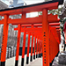
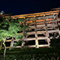
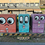
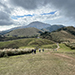
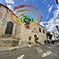
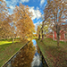
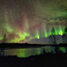
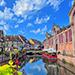
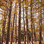
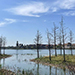

<金閣寺>
黃偉玉│品質本部
閃閃金光與倒影有著看一眼就會此生難忘的悸動。
<霍格華茲列車>
黃偉玉│品質本部
載著夢想向魔法世界出發。

<生田神社>
黃偉玉│品質本部
結緣神社許下愛情的願望。
<夏天美濃湖畔盛開的花旗木>
林啓棟│專案開發處 \ 專案管理一部
趁著傍晚沿著環湖步道悠然散步在美濃湖，看著盛開的花旗木覺得好像日本的櫻花，總是有固定的花期。看著這樣的美景總是想多待在樹下幾分鐘，畢竟要看到花旗木盛開可能又是要一年後了。
<美濃湖上的中正亭>
林啓棟│專案開發處 \ 專案管理一部
清澈的湖面倒映著蔚藍的天空，沿著湖畔青綠的樹木倒影行程美麗的像一幅畫。
<漂浮在埃及尼羅河畔的船>
簡志銘│業務一處 \ 客戶服務部
尼羅河是埃及古文明發源地，乘坐在船上彷彿穿越了時空回到古文明世紀並感受見證埃及古建築物的美。
<探索瑞士鐵力士山脈的風貌>
簡志銘│業務一處 \ 客戶服務部
登上鐵力士山，可以欣賞周圍壯觀的山脈和美麗的湖泊，會讓人心曠神怡並有一種彷彿置身於山水畫中的錯覺。
<新店夜景>
林仕勛│企業產品硬體工程一處 \ 訊號驗證部
夜色如墨，繁星點點，城市的燈火在遠處閃爍，像是無數未說完的故事，站在這片寂靜中，思緒如潮水般湧來，過去的回憶與未來的憧憬交織在一起。夜，總是讓人更貼近自己，黑暗並不可怕，因為它讓我們更懂得珍惜那些微弱卻溫暖的光。
<夕陽-圓山飯店>
林仕勛│企業產品硬體工程一處 \ 訊號驗證部
回家的路上，圓山飯店巍然矗立，在夕陽的映照下，紅牆金瓦更顯輝煌。天邊的晚霞染紅了整片天空，像是為這座城市披上一層溫柔的薄紗。車流緩緩，時間彷彿也慢了下來，讓人不禁駐足凝望。這一刻，忙碌的心終於找到片刻寧靜。

<音羽山懸崖上的清水寺>
曾柏翔│車電人工智慧處
京都最古老的寺廟-清水寺，正殿是在1633年透過繼手法、懸造法，不用任何一釘一鐵建造而成的純木建築。

<駁二的變電箱>
曾玟翔│平鎮營運處 \ Custom課
圖上是去高雄市的駁二藝術特區。變電箱都可以是一個景點，只要增添點色彩。但要小心有電危險，請勿攀登。也能改善市容何樂而不為呢？駁二許多地方都很好拍照且處處是驚喜，也有許多街頭藝人的表演和展覽，還有許多大船經過。

<路克索神廟>
曾玟翔│平鎮營運處 \ Custom課
猜猜這是哪？這是陽明山的擎天崗。這天天氣很好大太陽，但溫度適宜，從冷水坑爬山上來，大約需一小時，沿途風景優美，且路線好走，當走到擎天崗你會被這景色美呆了，遼闊的大草原，及許多的牛可觀賞，但要小心不要靠太近了。
<狗腳印幸福聯盟>
洪慧慈│工業設計處 \ 產品設計三部
狗腳印幸福聯盟，黃金獵犬救援及送養為宗旨的愛心團體。現場還有愛心義賣肉乾，讓大朋友、小朋友可以跟狗狗互動也可以幫助協會。
<一起出發吧！>
洪慧慈│工業設計處 \ 產品設計三部
大年初三清晨6點載著我的柴柴一起出發去花蓮囉！因為台北到花蓮，山路多，本來還想說柴柴會不會暈車，回頭一看，沒想到居然笑得這麼可愛，是個愛出門的柴柴呢！
<微笑魟魚>
劉柏君│IPC研發一處 \ 硬體研發部
位於X PARK的水族館中，魟魚們在大型玻璃裡恣意地遨遊著，看著他們臉上總是掛著微笑的表情，真的是會令人感到會心一笑。你有什麼壓力嗎？來水族館走走吧！！！
<下龍灣的夕陽餘暉>
金佳宜│Server昆山營運處
在暴風雨後的天晴，夕陽被染成粉紅色的倒映在水面，美麗卻帶有點神祕感，奉獻給在下龍灣巨石裡來來往往的船隻。在不知從何而來也不知將何去的現今，有這般景色，讓出差面對的一切困難，都煙消雲散。
<十里霧廊的烈日>
金佳宜│Server昆山營運處
零下20度的十里霧廊，即使裡三層外三層依舊無法抵擋鑽進皮膚裡的寒意。可就是這樣的冬日，那頂大又圓的太陽，卻不卑不亢的印在白雪皚皚的過道，給所有過客留下一抹暖意。
<韓國 慶州『月精橋』>
郭彥志│企業產品電源供應設計處 \ 直流電源供應設計部
慶州『月精橋』是位於韓國慶州市的一座古老石拱橋，也是慶州地區最具代表性的文化遺產之一，全長66米，為韓國國內最大規模的木製橋樑，到了夜幕降臨時橋面還會打出燈光，水面映襯出倒影，也算是一個賞櫻熱門地。
<宜蘭水豚君>
郭彥志│企業產品電源供應設計處 \ 直流電源供應設計部
毛摸起來刺刺的很像刷子，也喜歡別人幫牠抓抓癢，摸摸頭。
<伏見稻荷大社>
陳婕妤│策略採購三處 \ NB機構策略採購二部
神社內有許多狐狸像，這裡的狐狸並不是一般山林中的野狐，而是傳說中會把人們心願傳達給稻荷大神的靈狐。
<抓住秋天的尾巴>
陳婕妤│策略採購三處 \ NB機構策略採購二部
位於日本清水寺，去年楓葉紅得較晚，意外能看見楓葉的的景色非常壯觀美麗。

<慶典的石板路>
吳映嬅│業務處 \ 業務三部
彩旗盤旋，像天空綻放的煙火，凝結在這條石板路上。它們隨風舞動，彷彿在訴說這座城的故事—熱情、傳統，還有那份不滅的歡樂。。
<優雅的傳承>
吳映嬅│業務處 \ 業務三部
女人們頭頂花籃，緩緩步行，步伐穩健而優雅。這不只是遊行，而是傳承，是文化的驕傲。她們用姿態告訴世界：這裡的歷史，不只是記憶，更是生命的節奏。
<偷得浮生半日閒>
陳筱筑│產品二處 \ 專案二部
累了，就吃些甜點、喝點茶，配上迷人的花香，休息好了再出發。
<藏王尋找雪怪樹冰>
胡汝川│六標準差執行小組
1月晴朗的某日，下午搭纜車上藏王尋找傳說中的雪怪樹冰。

<隆黛爾宮的秋景>
徐韻淇│企業產品業務一處
前往隆黛爾宮的必經之路上，無意間在橋上瞥見那令人心曠神怡的楓葉與河畔景色，隨著晴空的映照，倒影輕輕蕩漾在平靜的河面上。
<圖雷達城堡塔樓俯瞰城堡內部與秋景>
徐韻淇│企業產品業務一處
穿越楓林大道，前往坐落於戈雅國家公園中的圖雷達城堡，從主樓遙望，眼前展開的是高哈河河谷的壯麗景色。金黃、紅橙的楓葉與鬱鬱蔥蔥的綠樹交相輝映，彼此成為鮮明的對比。

<凱米河畔的星空伴著極光>
徐韻淇│企業產品業務一處
順著凱米河往上游前進，避開路上放養的馴鹿，直到抵達萬里無雲的森林湖畔。夜幕低垂，恬靜的星空下，極光翩然起舞，如同彩虹般輕盈地橫跨天際。
<粉紅清真寺>
歐怡伶│系統應用研發處 \ 系統應用一部
位於馬來西亞行政首都布城的一所清真寺–布特拉清真寺，外觀清一色粉紅色相當柔美！有四分之三建築在布拉特湖上，又稱為水上清真寺，乘坐觀光遊船可以欣賞到此壯麗景色。
<中正紀念堂儀隊交接>
吳柏欣│設計品質保證處
中正紀念堂儀隊交接移師戶外。
<佛光山2025年春節平安燈法會>
吳柏欣│設計品質保證處
佛光山2025年春節平安燈法會。
<晚霞>
王凱翔│工程支援處 \ 行政發展部
攝於傍晚的大稻埕碼頭河畔。
<漁光島日落>
王凱翔│工程支援處 \ 行政發展部
耳聞聽說漁光島日落的美，實際到了現場後，覺得真如傳言所述。
<Night View>
王凱翔│工程支援處 \ 行政發展部
攝於富國島南島的景色，號稱越南版的地中海風情。

<繽紛小鎮-法國科瑪>
劉秋玲│六標準差執行小組
科瑪（Colmar）是法國東北部的童話小鎮，介於法國德國邊界，宮崎駿動畫《霍爾的移動城堡》是以此為場景構思，有著中世紀色彩繽紛的建築和聞名的「小威尼斯」運河。
<壯闊的馬特洪峰-利菲爾湖>
劉秋玲│六標準差執行小組
搭乘高納葛瑞特（Gornergrat）的齒軌列車來到山頂車站，一定不能錯過倒映馬特洪峰的利菲爾湖（Riffelsee），這是策馬特必看的美景。雖當天馬特洪峰山頭被雲霧遮住，周邊的旅人輕聲細語，大家都靜下心來欣賞這一輩子只看一次的美景。
<秘境-國王湖上湖>
劉秋玲│六標準差執行小組
國王湖是德國最美的湖泊，尤其是上湖區充滿仙氣，湖水清澈通透，張張拍起來都像月曆。
<晚霞雲海>
洪秉誠│產品九處 \ 軟體九部
隙頂二延平步道觀雲平台滿滿的人潮，為了一睹美麗無法言喻的畫面。
<鹽水>
洪秉誠│產品九處 \ 軟體九部
鹽水的蜂炮及煙火，是每年元宵南台灣的重要活動，期許一年的壞東西伴隨鞭炮炸飛吧！
<函館山百萬夜景>
陳俊翰│電子技術處 \ 安規暨環保事務部
函館山百萬夜景曾獲世界三大夜景之一，最佳拍攝夜景時段為日落前後的30分鐘。

<北海道圓山公園>
陳俊翰│電子技術處 \ 安規暨環保事務部
原本是明治時期開拓使所建立的樹木試驗場，後來在明治末到大正時期被改建成公園，緊鄰北海道神宫以及圓山動物園。

<大漁灣>
邱詩儒│平鎮營運處 \ 專案課
崑山大漁灣一隅，清澈的湖面讓人身心放鬆，適合坐著發呆。
<穆罕默德清真寺>
邱詩儒│平鎮營運處 \ 專案課
位於開羅的穆罕默德清真寺，建於19世紀；外牆是採用雪花石墻砌成，十分壯麗雄偉，可媲美土耳其的藍色清真寺。
<青山王家將坐炮>
陳俊宏│歐美第二設計品保處 \ 歐美第二設計品保一部
家將身著傳統服飾坐在炮陣中令人嘆為觀止。
<鹿耳門煙火>
陳俊宏│歐美第二設計品保處 \ 歐美第二設計品保一部
絢爛的煙火照亮整個鹿耳門的夜空。


{kind=link}
{kind=link}
{kind=link}
{kind=link}
{kind=link}
{kind=link}
{kind=link}
{kind=link}
{kind=link}
{kind=link}
{kind=link}
{kind=link}
{kind=link}
{kind=link}
{kind=link}
{kind=link}
{kind=link}
{kind=link}
{kind=link}
{kind=link}
{kind=link}
{kind=link}
{kind=link}
{kind=link}
{kind=link}
{kind=link}
{kind=link}
{kind=link}
{kind=link}
{kind=link}
{kind=link}
{kind=link}
{kind=link}
{kind=link}
{kind=link}
{kind=link}
{kind=link}
{kind=link}
{kind=link}
{kind=link}
{kind=link}
{kind=link}